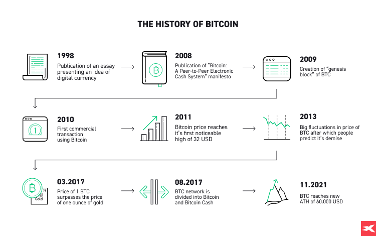

PROGETTAZIONE E REALIZZAZIONE DI UN WEBSITE SU CRIPTOVALUTE
← Evoluzione e Prospettive delle Criptovalute →
Nel gennaio 2014 la piattaforma Mt. Gox che risultava essere il maggiore exchange di criptovalue fu hackerata. Gli hacker riuscirono ad impadronirsi di 850.000 bitcoin. I responsabili di quello che rimane il più grande furto nella storia delle criptovalute non sono tutt’oggi stati identificati e questo mosse numerose critiche circa la sicurezza.
Nel 2015 ci fu il lancio di Ethereum, un altcoin che introdusse gli smart contract, una tecnologia che consente alla blockchain di ospitare dei software eseguibili, oltre alla moneta elettronica. Ethereum è quindi una piattaforma decentralizzata che consente l'esecuzione di contratti intelligenti (smart contracts) e applicazioni decentralizzate (dApps). La sua criptovaluta nativa, Ether, non è solo un mezzo di pagamento ma viene utilizzata per alimentare le operazioni e le transazioni sulla rete Ethereum.
Nel 2017 il Bitcoin raggiunse i 20.000 $ dato dall’esponenziale aumento delle piattaforme di trading e di exchange rendendo molto semplice l’acquisto e la vendita di criptovalute. Ma nel 2018 i prezzi ebbero un brusco calo dato dall’insostenibilità del mercato, conseguenza di molti progetti falliti.
Nel novembre 2024, a seguito delle elezioni presidenziali negli USA, si sono battuti nuovi record: il valore ha raggiunto i 90.000 dollari e, il 23 novembre 2024, ha toccato i 100.000 dollari. I progetti crypto che sono sopravvissuti allo scoppio del 2018 hanno in comune l’obiettivo di affrontare sfide reali, offrendo soluzioni utili attraverso la tecnologia blockchain. Oggi gli investitori si concentrano sui piani aziendali delle start-up, e su progetti riguardanti settori come il gioco d’azzardo, videogiochi, sport e finanza.

Fonte: XTB. Link: xtb.com
Fonte background:Freepik. link:freepik.com